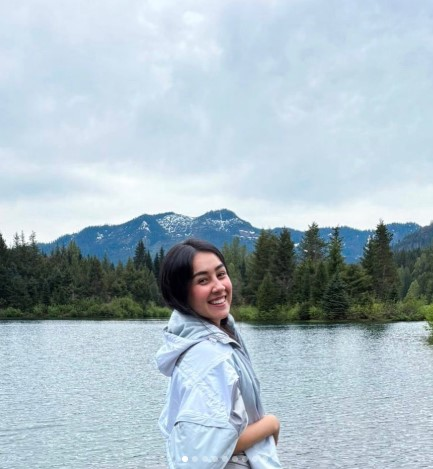

Born to Be an Au Pair
Uma mentoria com alma, feita pra você que sonha em ser au pair nos EUA. Um espaço acolhedor, com acompanhamento real, pra te ajudar desde o primeiro passo até o embarque — e além.

Uma mentoria com alma, feita pra você que sonha em ser au pair nos EUA. Um espaço acolhedor, com acompanhamento real, pra te ajudar desde o primeiro passo até o embarque — e além.
Eu sou a Gabi, mentora desse projeto feito com muito amor e propósito. Eu já estive exatamente onde você está agora: cheia de dúvidas, insegura com o inglês, mas com um sonho enorme no coração. E foi por isso que criei essa mentoria — pra caminhar com você em cada etapa.
Aqui você não encontra só aulas. Você encontra uma amiga, apoio sincero, dicas práticas e uma rede de meninas com o mesmo sonho.
Eu fui au pair de dezembro de 2018 a dezembro de 2020. Nesse tempo, passei por rematch, vivi a pandemia em outro país, pulei de paraquedas, esquiei na neve (e levei 26 pontos 😅), usei meu seguro sport e vivi experiências incríveis! Viajei para Europa no meu primeiro ano e conheci Londres, Paris e Amsterdam. Cuidei de duas crianças lindas, o Noah e a Ailynn, e fui muito feliz. Fiz amizades, realizei sonhos e ainda trouxe um dimdim pro Brasil. Se eu consegui, você também pode. 💖
"A mentoria da Gabi me ajudou muito. Ela me acompanhou desde o início, quando eu não falava inglês, até eu tirar meu visto e até mesmo achar meus assentos e ver meus voos. Foi incrível demais!"
– Ana Caroline
